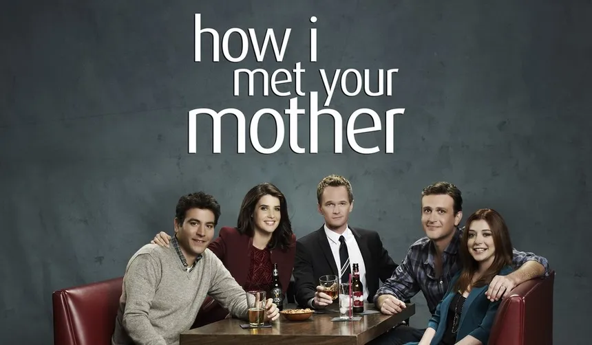

How I Met Your Mother
| Informações geral | |
|---|---|
| Formato | siticon |
| Gênero | Comedia romântica |
| Duração | 23 min. aprox. |
How I Met Your Mother (bra: Como Eu Conheci Sua Mãe; prt: Foi Assim que Aconteceu) é uma sitcom estadunidense da CBS, criada por Carter Bays e Craig Thomas. Estreou no dia 19 de setembro de 2005 e a temporada 2013-14, sua nona edição, é a última, encerrando-se em 31 de março de 2014, após 208 episódios. A série mostra Ted Mosby em 2030 narrando aos seus filhos a história de como conheceu a mãe deles.
Conhecido por sua estrutura única e humor excêntrico, How I Met Your Mother recebeu críticas positivas na maior parte de suas nove temporadas e ganhou um status cult ao longo dos anos, com milhões de fãs. O seriado foi indicado para 24 prêmios Emmy até então, ganhando sete. Em 2013, Alyson Hannigan ganhou como Atriz de Comédia Favorita pelo Público. Em 2012, sete anos depois de sua estreia, a série ganhou na categoria de Seriado de Comédia Favorito pelo Público, e Neil Patrick Harris ganhou o prêmio de Ator de Comédia Favorito pelo Público.
How I Met Your Mother começou a ser exibida no Brasil pelo canal Fox Life em 4 de janeiro de 2006, e deixou de ser exibida em maio de 2010. Estreou em Portugal pelo canal Fox Life em fevereiro de 2008, depois foi exibido pelo canal Fox Portugal e agora é exibido pela Fox Comedy. Voltou a ser exibida no Brasil no dia 2 de junho de 2012, desta vez com dublagem, na grade da Fox Brasil.
No Brasil, começou a ser exibida em rede aberta e em horário nobre pela Rede Bandeirantes em 2 de janeiro de 2014, e depois passou a ser exibida de madrugada pelo canal a partir de 22 de fevereiro de 2015, e entre 2014 e 2021, foi exibida no Brasil pelo Sony Channel. atualmente a série é exibida no Brasil pelo canal Star Channel.
A série gira em torno da vida de Ted Mosby e dos seus amigos, que é narrada pelo próprio aos seus filhos, 25 anos mais tarde. Bob Saget, como Ted Mosby do futuro, conta então aos filhos as histórias e peripécias que o levaram a conhecer a mãe deles. As outras personagens principais são Marshall Eriksen, Robin Scherbatsky, Lily Aldrin e Barney Stinson.
Em 2005, aos 27 anos, o jovem Ted Mosby (Josh Radnor), após o seu melhor amigo, Marshall Eriksen (Jason Segel), ficar noivo, decide finalmente ir em busca da sua cara-metade. Com gestos românticos questionáveis, Ted conhece aRobin Scherbatsky (Cobie Smulders), no bar que costumavam frequentar, MacLaren's Pub. Após uma série de eventos, Robin passa a pertencer ao grupo de amigos de Ted: Barney, Marshall, e sua noiva, Lily, que namoram desde o primeiro ano da faculdade.
Muitos fãs acharam o final da série um tanto "amargo", tendo lados positivos para uns, e negativos para outros. O público que não gostou do desfecho que foi relatado na série, chegou até a fazer petições na Internet afim de fazer a CBS (canal que exibia a série) a mudar seu roteiro final. Mais tarde, segundo os autores, a versão em DVD da 9ª Temporada, será lançada contendo um final alternativo.
Atualmente a coleção em DVD da série não foi lançada ainda no Brasil. Em Portugal (Região 2, com legendas em português), a 1ª temporada foi lançada em abril de 2009, a 2ª em setembro de 2009, a 3ª em dezembro de 2009 e a 4ª em março de 2010. As datas de lançamentos seguintes são da Região 1 (América do Norte). Os episódios da 1ª até a 9ª temporada já estão disponíveis.
| Temporada | Data de lançamento | Número de episódios |
|---|---|---|
| Primeira temporada completa | 21 de novembrp de 2006 | 22 |
| Segunda temporada completa | 2 de outubro 2007 | 22 |
| Terceira temporada completa | 7 de outubro 2008 | 20 |
| Quarta temporada completa | 29 de setembro 2009 | 24 |
| Quinta temporada completa | 21 de setembro 2010 | 24 |
| Sexta temporada completa | 28 de setembro 2011 | 24 |
| Sétima temporada completa | 16 de maio 2012 | 24 |
| Oitava temporada completa | 1 de outubro 2013 | 24 |
| Nona temporada completa | 23 setembro 2014 | 24 |
| Informações geral | |
|---|---|
| Formato | siticon |
| Gênero | Comedia romântica |
| Duração | 23 min. aprox. |